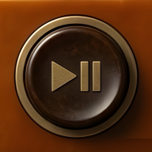
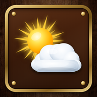

Franks Apps
Holz & Messing · ohne Werbung

Radio Retro
Songs & Jingles

Wetter
Altenbochum & Asel-Süd
PDF-Werkstatt
Lesen, Bearbeiten, Unterschrift
Video-Schnitt
Schneiden & Zusammenfügen
So kommt eine App auf den Startbildschirm:
App oben antippen → sie öffnet sich → oben rechts
⋮
→
„Zum Startbildschirm hinzufügen“
→
„Installieren“
.